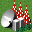
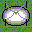
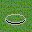
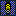

(絵は以後変更あり)

(絵は以後変更あり)
高性能地雷
ワープ地雷

地雷・・・3のダメージを怪獣に与えます。使用後はミサイル着弾と同じようになります。
高性能地雷・・・6のダメージを怪獣に与えます。使用後はミサイル着弾と同じようになります。
ワープ地雷・・・違う島に怪獣を強制ワープさせます。成功した場合、地雷はそのままですが、失敗した場合、踏みつぶされます。
箱庭諸島２の説明(中級編)
初級編では省いてしまったルールについて、 このページで説明します。 ある程度島が成長してきたら、ここの情報も必要になるでしょう。 さらに細かい部分については、 上級編でどうぞ。
| ミサイル基地と同様ですが、こちらは海に作ります。 観光者からは海にしか見えません。浅瀬には作れません。 | ||
| 海底油田 | |
海を掘削すると見つかることがあります。 海底油田からは、石油を手に入れることができます。 ただし、いつかは枯渇します。 |
| 周囲３ヘックス以内に怪獣が入ると自動的にレーザーで攻撃をします。 誤差率は１ヘックスです。 強化によって一度に１０発発射することができます。 | ||
| 記念碑 |
作るのに莫大な費用がかかりますが、普段は特に役に立ちません。
国威掲揚に使って下さい。
一応、怪獣には壊されない、森のように火災を防いでくれる、
等のささやかなメリットはあります。詳細は後述します。 |
|
| ハリボテ |  | 見かけだけ防衛施設のハリボテです。安上がりです。 これさえ並べておけば、みんなびびって攻撃してこないこと請け合いです。 それ以外の機能は特にありません。 |
| 衛星追跡管制施設 | 衛星の管制、操作を行う施設です。これがないと衛星は全く役に立ちません。 | |
| マイクロ波受信施設 |  | 発電衛星からのマイクロ波を受信する施設です。これがないと発電衛星は全く役に立ちません。 |
| 気象研究所 | 気象兵器を使うための機関です。１０段階まで強化できます。この研究所は１つの島に１つまでしか建てられません。通常は森に偽装されています。 | |
| 気象観測所 | 気象兵器が自分の島に対して行われたとき、その発射元をある確率で特定します。１０段階まで強化できます。この研究所は１つの島に１つまでしか建てられません。 | |
| 特殊音波施設 | 怪獣の嫌う特殊音波を出す施設です。よって怪獣が島に出現する確率が減ります。また怪獣の帰る確率が高くなります。１０段階まで強化できます。この施設は１つの島に１つまでしか建てられません。 | |
| いのら研究所 | 怪獣研究をする施設です。その研究によって怪獣撃退を行うことができます。１０段階まで強化できます。この研究所は１つの島に１つまでしか建てられません。 | |
| 警察署 | 市民の安全を守る機関です。食糧不足や暴動による施設の破壊をある程度抑制できます。 | |
| 消防署 | |
火災を未然にふせぐ機関です。周囲３HEXに効果があります。 |
| 病院 | 伝染病がおきにくくなります。 | |
| 空港 | 人口の増加を促進します。20億円の維持費がかかります。 | |
| 国際空港 | 空港よりも人口の増加を促進します。空港にさらに空港建設を繰り返すことにより建設できます。60億円の維持費がかかります。 | |
| 駅 (絵は以後変更あり) |
|
線路を接続することによって周りの都市を２万人まで成長させることができます。 |
| 線路 (絵は以後変更あり) |
駅に接続させることによりその線路の長さとその島の人口の大きさに比例する収入を得ることができます。 | |
| 競馬場 | 検討中！！ | |
| サッカースタジアム | 検討中！！ | |
| 野球場 | 検討中！！ | |
| 屋内スキー場 | 検討中！！ | |
| 水族館 | 検討中！！ | |
| リゾートホテル | 検討中！！ | |
| ゴルフ場 | 検討中！！ | |
| 遊園地 | 検討中！！ | |
| 展示場 | 検討中！！ | |
| カジノ | 検討中！！ | |
| 公園 | 検討中！！ | |
| 植物園 | 検討中！！ | |
| 塔 | 検討中！！ | |
| 城 | 検討中！！ | |
| 地雷 高性能地雷 ワープ地雷 |
 |
怪獣がこれを踏むことによりいろいろな効果を得ることができます。観光モードでは平地にしか見えません。 地雷・・・3のダメージを怪獣に与えます。使用後はミサイル着弾と同じようになります。 高性能地雷・・・6のダメージを怪獣に与えます。使用後はミサイル着弾と同じようになります。 ワープ地雷・・・違う島に怪獣を強制ワープさせます。成功した場合、地雷はそのままですが、失敗した場合、踏みつぶされます。 |
平地には、周囲に村、町、都市、農場のうち最低1つが存在すれば、 毎ターン20%の確率で人口100人の 村が発生します。
村、町では、毎ターン100～1000人の人口が増えます。 誘致活動を行ったターンに限り、100～3000人の増加となります。 それぞれ3000人、10000人に到達すると、町、都市へと発展します。
都市の人口は、自然には増えません。 しかし、誘致活動を行ったターンは、100～300人だけ増加します。 また、難民を受け入れた時には、都市も受け入れ先となります。 都市の最大人口は20000人です。 難民に関しては、「ミサイルについて」のところで説明します。
住民１人当たり１㍑の水が必要です。 浄水場の水の供給が足りない場合、都市の人口が減ります。 村や町の人口は減りません。
住民100人当たり1トンのゴミが毎ターンでます。 住民のゴミが10ターン分以上たまると住民は島を出ていってしまいます。
森には、100～20000本の木があります。 木は毎ターン100本増えていきます。 植林によって作られたばかりの森には、木は100本だけ あります。 伐採を行うと、木を売ることができますが、 部分的な伐採はできず、森1ヘックス分を全部売る事になります。 木は100本につき5億円になります。
農場、養殖場、牧場、工場では、人が働くことができます。 山も、採掘場を設置することにより 人が働けるようになります。
農場で働ける人数は、最初に農場整備を行った時点では 10000人ですが、同じ場所に繰り返し農場整備を行うと、 1回につき2000人ずつ規模が大きくなります。 最大で50000人まで働けるようになります。
養殖場で働ける人数も、最初に養殖場整備を行った時点では 10000人ですが、同じ場所に繰り返し養殖場整備を行うと、 1回につき2000人ずつ規模が大きくなります。 最大で50000人まで働けるようになります。 牧場で働ける人数は、最初に牧場整備を行った時点では 1000人ですが、同じ場所に繰り返し牧場整備を行うと、 1回につき1000人ずつ規模が大きくなります。 最大で10000人まで働けるようになります。工場も同様ですが、工場建設1回につき10000人分 増設されます。最大で200000人まで働けるようにできます。 10000人で10000Kwの電気が必要です。
山は、採掘場整備1回につき5000人分で、 最大200000人まで働けるようにできます。 1000人で1000Kwの電気が必要です。
銀行は、銀行建設1回につき1000億円で、 10000億円まで出資できます。同じ場所で何ターンも連続して農場整備等を行う時は、 数量を指定すると便利です。 指定したターン数の間、コマンドが繰り返されます。
浄水場は最初に浄水所整備を行った時点では 50000㍑の水を供給できますが、同じ場所に繰り返し浄水所整備を行うと、 1回につき50000㍑ずつ水の供給量が大きくなります。 最大で500000㍑まで水が供給できます。
火力発電所は最初に火力発電所整備を行った時点では 10000Kwを発電できますが、同じ場所に繰り返し火力発電所整備を行うと、 1回につき5000Kwずつ発電量が大きくなります。 最大で100000Kwまで電気を発電できます。この発電所では発電のために1000Kw当たり１トンの石油が必要です。
太陽光発電所は最初に太陽光発電所整備を行った時点では 5000Kwを発電できますが、同じ場所に繰り返し太陽光発電所整備を行うと、1回につき5000Kwずつ発電量が大きくなります。 最大で100000Kwまで電気を発電できます。
風力発電所は最初に風力発電所整備を行った時点では 1000Kwを発電できますが、同じ場所に繰り返し風力発電所整備を行うと、1回につき1000Kwずつ発電量が大きくなります。 最大で10000Kwまで電気を発電できます。
水力発電所は最初に水力発電所整備を行った時点では 3000Kwを発電できますが、同じ場所に繰り返し水力発電所整備を行うと、1回につき3000Kwずつ発電量が大きくなります。 最大で30000Kwまで電気を発電できます。
地熱発電所は最初に地熱発電所整備を行った時点では 3000Kwを発電できますが、同じ場所に繰り返し地熱発電所整備を行うと、1回につき3000Kwずつ発電量が大きくなります。 最大で30000Kwまで電気を発電できます。
波力発電所は最初に波力発電所整備を行った時点では 5000Kwを発電できますが、同じ場所に繰り返し波力発電所整備を行うと、1回につき5000Kwずつ発電量が大きくなります。 最大で100000Kwまで電気を発電できます。
ゴミ処理施設は最初にゴミ処理施設整備を行った時点では 1000トンを処理できますが、同じ場所に繰り返しゴミ処理施設整備を行うと、 1回につき500トンずつ処理量が大きくなります。 最大で10000トンまでゴミを処理できます。
すでに防衛施設が存在する場所に、もう一度防衛施設建設を 行うと、その防衛施設を自爆させることができます。 これにより、もしも周囲2ヘックス以内に怪獣がいた場合は、 一撃で葬ることができます(もちろん島にも多大な被害がでます)。 ただし、自爆よりも怪獣が動く方が先の場合もあるので注意。 また、意図的に自爆させなくても、怪獣が防衛施設に達すれば自動的に 自爆します。
| 開発計画 | 説明 | |
|---|---|---|
|
| 数量設定 | ほかの島から食料や資金を奪います。 数量設定を行うことで確率とほかの島から奪う資金や食料を増やすことができます。 強奪は数量設定＊１００億円のお金がかかります。ＳＴ強奪は数量設定＊２００億円のお金がかかります。 |
|
| 座標 | 地ならしは、整地同様荒地などを平地にします。 整地との違いは、地ならしを行ってもターンが進行しない事と、 値段が高い事だけです。 |
|
| 座標 | 突貫埋め立ては、埋め立て同様海などを埋め立てます。 埋め立てとの違いは、突貫埋め立てを行ってもターンが進行しない事と、 値段が高い事だけです。 |
|
| 座標 | 地雷を撤去します。撤去した後は平地になります。 |
| 掘削(200億円) | 座標(、数量) |
陸地を掘削し、浅瀬にします。
浅瀬を掘削すると、海になります。 また、海で実施すると、海底油田が見つかる事があります。 この場合は、使用する予算を決めるために数量を指定して下さい。 数量1につき、予算200億円で、油田発見率は2%アップします。 |
| 突貫掘削(400億円) | 座標(、数量) |
ターンを消費せずに陸地を掘削し、浅瀬にします。
浅瀬を掘削すると、海になります。 海底油田は見つかりません。 |
| 海底基地建設 (8000億円) |
座標 | 海に海底基地を作ります。 |
| 記念碑建造 (9999億円) |
座標(、目標)(、数量) |
平地に記念碑を作ります。数量設定を行うことで何種類かの記念碑を選ぶことができます。 また、すでに記念碑のある所に実施すると、その記念碑が目標で設定した 島に飛んでいきます。 |
| ハリボテ設置 (1億円) |
座標 | 平地にハリボテを設置します。 |
| 地雷建設 (300億円) |
座標 | 平地に地雷を建設します。 |
| 高性能地雷建設 (600億円) |
座標 | 平地に高性能地雷を建設します。 |
| ワープ地雷建設 (500億円) |
座標 | 平地にワープ地雷を建設します。 |
| 空港建設 (4000億円) |
座標 | 平地に空港を建設します。 |
| 気象研究所建設 (5000億円) |
座標 | 平地に気象研究所を建設します。 |
| 気象観測所建設 (2000億円) |
座標 | 平地に気象観測所を建設します。 |
| 病院建設 (300億円) |
座標 | 平地に病院を建設します。 |
| 特殊音波施設建設 (3000億円) |
座標 | 平地に特殊音波施設を建設します。いのら研究所が島にあることが必要です。 |
| いのら研究所建設 (2000億円) |
座標 | 平地にいのら研究所を建設します。 |
| 衛星追跡管制施設整備 (10000億円) |
座標 | 平地に衛星追跡管制施設を建設します。 |
| マイクロ波受信施設整備 (10000億円) |
座標 | 平地にマイクロ波受信施設を建設します。 |
| 競馬場建設 (2000億円) |
座標 | 平地に競馬場を建設します。 |
| サッカースタジアム建設 (2000億円) |
座標 | 平地にサッカースタジアムを建設します。 |
| 野球場建設 (1500億円) |
座標 | 平地に野球場を建設します。 |
| 屋内スキー場建設 (3000億円) |
座標 | 平地に屋内スキー場を建設します。 |
| 水族館建設 (1200億円) |
座標 | 平地に水族館を建設します。 |
| リゾートホテル建設 (2000億円) |
座標 | 平地にリゾートホテルを建設します。 |
| ゴルフ場建設 (1300億円) |
座標 | 平地にゴルフ場を建設します。 |
| 遊園地建設 (1500億円) |
座標 | 平地に遊園地を建設します。 |
| 展示場建設 (1000億円) |
座標 | 平地に展示場を建設します。 |
| カジノ建設 (500億円) |
座標 | 平地にカジノを建設します。 |
| 公園建設 (100億円) |
座標 | 平地に公園を建設します。 |
| 植物園建設 (1500億円) |
座標 | 平地に植物園を建設します。 |
| 塔建設 (1000億円) |
座標 | 平地に塔を建設します。 |
| 城建設 (3000億円) |
座標 | 平地に城を建設します。 |
| 警察署建設 (2000億円) |
座標 | 平地に警察署を建設します。 |
| 消防署建設 (3000億円) |
座標 | 平地に消防署を建設します。 |
| 怪獣派遣 (3000億円) |
目標 | 目標で設定した島に、人造怪獣を送り込みます。いのら研究所がレベル２に達していることが必要です。 |
| 鉄鋼兵派遣 (2000億円) |
目標 | 目標で設定した島に、鉄鋼兵を送り込みます。いのら研究所がレベル４に達していることが必要です。 |
| 特攻部隊派遣 (5000億円) |
目標 | 目標で設定した島に、特攻部隊を送り込みます。いのら研究所がレベル６に達していることが必要です。 |
| FX-330派遣 (7000億円) |
目標 | 目標で設定した島に、FX-330を送り込みます。いのら研究所がレベル８に達していることが必要です。 | FX-330A派遣 (20000億円) |
目標 | 目標で設定した島に、FX-330Aを送り込みます。いのら研究所がレベル１０に達していることが必要です。 |
| 誘致活動 (1000億円) |
数量 | 誘致活動を行ったターンは、人口が増えやすくなります。 |
| 攻撃停止を要請(無料) | なし | 攻撃停止命令を箱島国際連盟に要請します。 |
| 怪獣撃退(1000億円) | なし | 怪獣を島から帰らせます。いのら研究所が島にあることが必要です。成功はなかなかしません。 |
|
ST資金援助(100億円) ST石油援助(10トン) |
座標、数量、目標 | 他の島に秘密裏に資金（石油)(食料)を援助します。 このコマンドだけではターンは進みません。 数量を指定すると、数量×100億円(10トン)(10000トン)援助します。 |
| レーザー発射(1000億円) | 目標,座標 | レーザーを撃ちます。これをするにはレ－ザー衛星が必要です。 １回に一発しか撃てません。 |
| サテライトPMS砲発射(3000億円) | 目標,座標 | サテライトPMS砲を撃ちます。これをするにはPMS衛星が必要です。 １回に一発しか撃てません。この攻撃では怪獣に大ダメージを与えることができます。 |
| 攻撃衛星打ち上げ(3000億円) 監視衛星打ち上げ(4000億円) 防御衛星打ち上げ(10000億円) レーザー衛星打ち上げ(4000億円) 防御衛星打ち上げ(10000億円) |
なし | 衛星を打ち上げます。打ち上げ成功率は75％です。 すでに衛星を持っている場合は強化がされます。 |
| PMS衛星整備(20000億円) | なし | レーザー衛星をEMP衛星に改造します。 |
| 攻撃衛星撃ち落とし(1000億円) 監視衛星撃ち落とし(1000億円) 防御衛星撃ち落とし(1000億円) レーザー衛星撃ち落とし(10000億円) PMS衛星撃ち落とし(10000億円) 発電衛星撃ち落とし(10000億円) |
目標 | 衛星を撃ち落とします。撃墜成功率は２５％です。 |
| 各種同盟に加盟(1億円) | なし | 同盟に加盟します。 |
| 各種同盟から脱退(1億円) | なし | 同盟から脱退します。 |
| 各種気象兵器 | 目標 | 気象兵器に関しては気象兵器の欄で説明します。 |
植林、農場整備、 工場建設、ミサイル基地建設、 防衛施設建設など、「平地に何か作る」系の計画は、 実際には平地以外にも、村、町、都市 に直接実行することが可能です (村が勝手に発生して予定が狂うのを防ぐための便宜上の ルールです)。
埋め立てが行えるのは、陸に隣接した海に限られます。
普通の海だった場合は、埋め立てにより浅瀬になります。
浅瀬だった場合は、埋め立てにより荒地になります。 と同時に、もし隣接している海(浅瀬含む) が3ヘックス以内であれば、それらのヘックスが 浅瀬になります。
掘削は、山を荒地に、陸地全般を浅瀬に、 浅瀬を海にすることができます。
さらに、海を掘削することで、油田を探すことが出来ます。 この場合は、数量指定が関係します。 費用は数量に比例しますが、 油田が見つかる確率も数量に比例して高くなります (数量×2%です)。
一度油田が見つかったら、その油田からは毎ターン200～300トン の石油が産出します。ただし、毎ターン3%の確率で枯渇します。 もちろん、枯渇する前にミサイルや災害で破壊されてしまったらそこまでです。
ミサイルは、原則として着弾した場所を一撃で荒地にします (陸地破壊弾の場合は浅瀬にします)。 ただし、次のような例外があります。
海(浅瀬含む)、山、海底基地には、通常ミサイルが落ちても被害がありません。 ただし、陸地破壊弾の場合は、 浅瀬なら普通の海に、海底基地も海に、 山を荒地にしてしまいます。 また陸地生成弾の場合は、 浅瀬なら荒れ地にに、海は浅瀬に海底基地も浅瀬に、 陸地を山にしてしまいます。
銀行にミサイルが落ちると必ずその銀行へ出資されていたお金の５０％が打った島に流れ着きます。 ＳＴミサイルでも必ず届きます。お気をつけください。
怪獣は体力をもっており、 ミサイルが命中する度に体力が1減ります。 例外的にカウントダウンいのらはその特殊な体質からミサイルが当たると体力が１増えます。 体力が0になると倒せます。
ただし、陸地破壊弾の場合は、 怪獣のいる陸地ごと水没させるので、一撃で倒せます。
また陸地生成弾の場合は、 怪獣のいる陸地が山になり飲み込まれてしまうので、一撃で倒せます。 また怪獣捕縛弾弾の場合は、 怪獣にうまく命中すると10%の確率で捕縛できます。荒地ではなく海になります。 陸地生成弾の場合は、 浅瀬になります。。
ミサイルが村、町、都市に命中すると、 当然相手国の人口が減ります。 そうすると、なぜかその半数程度の難民が ミサイルを撃った国に出現します。 難民は、平地、村、町、都市が 適当に受け入れます(ようするに人口が増えます)。 受け入れは、平地に1000人程度の村ができる、または 村、町、都市の人口が最大5000人増える、 という形でなされます。
なお、陸地破壊弾や陸地生成弾やSTミサイルを撃った場合には、 なぜか難民は発生しません。
ミサイル基地、および海底基地にはレベルがあります。 初級編では「ミサイル発射数は基地一つにつき一発」としましたが、 実際にはレベルが上がると一基で何発も撃てるようになります。 具体的には、レベルの数だけミサイルを同時発射できます。 最初はレベル1なわけです。
発射したミサイルが村、町、都市に命中すると、 その人口に応じて(2000人で1ポイント)経験値が入ります。 2000人以下の村に命中しても無効です。 また、怪獣をミサイルで仕留めた場合も経験値が入ります (陸地破壊弾や陸地生成弾ではだめです)。 また怪獣に１発当てるごとに1ポイントの経験値が入ります。
レベルの上がり方は次の通りです。
| レベル | ミサイル基地の経験値 | 海底基地の経験値 |
|---|---|---|
| 1 | 0 | 0 |
| 2 | 20 | 20 |
| 3 | 60 | 60 |
| 4 | 120 | 120 |
| 5 | 200 | 200 |
ミサイルは、複数発射する場合でも同一の地点を目標に発射されます。 目標が同一の地点と言っても、各ミサイルは 誤差範囲内のどこに落ちるかわからないので、着弾地点は1発ごとに違います。 もちろん、同じ場所に落ちて無駄撃ちになる事もあります。
誤差が1ヘックスのミサイルは、目標地点及び隣接する6ヘックス、 合計7ヘックス内のどこかに落ちます。 誤差が2ヘックスのミサイルは、それに加えてさらに周囲の12ヘックスを合わせた、 合計19ヘックス内のどこかに落ちます。
例を示すと、下の図において中央の都市を狙った場合、 誤差1ヘックスのミサイルであれば 都市または平地のどこかに落ちます。
誤差2ヘックスのミサイルであれば、 都市または平地または荒地のどこかに落ちます。


範囲内であれば、どのヘックスに落ちる可能性も均等です。 目標中央に落ちやすい、という事はありません。 また、端の方を狙った場合、地図外に落ちることもあります。
| 名前 | 数量設定 | 画像 |
|---|---|---|
| モノリス | 0 | |
| 戦没者慰霊碑 | 1 | |
| 戦いの碑 | 2 | |
| 女神の像(金) | 3 | |
| 女神の像(銀) | 4 | |
| 女神の像(銅) | 5 | |
| 天使像(銀) | 6 | |
| 天使像(金) | 7 |
| 名前 | アイコン | 条件 |
|---|---|---|
| 皇帝 | もっとも多く王位を持っている島 | |
| 食料王 |  |
農場および養殖場の合計規模が１０万人以上でもっとも多い島 |
| 工業王 |  | 工場の合計規模が５万人以上でもっとも多い島 | 採掘王 | 採掘場の合計規模がもっとも多い島 |
| 温泉王 |  |
温泉の数が３個以上でもっとも多い島 |
| 動物園王 |  | 動物園の数が３個以上でもっとも多い島 |
| デパート王 |  |
デパートの数が３個以上でもっとも多い島 |
| いのらキラー王 | 今までもっともたくさん怪獣を倒した島 | |
| 浄水場王 | 浄水場の規模がもっとも多い島 | |
| 発電王 | 最大発電量がもっとも多い島 | |
| ゴミ処理場王 | ゴミ処理場の規模がもっとも多い島 | |
| 石油王 | |
海底油田の数がもっとも多い島 |
| レジャー王 | レジャー関連の施設数がもっとも多い島 | |
| 収入王 | 10ターンの収支の合計がもっとも多い島 | |
| 資金王 | 資金がもっとも多い島 | |
| 面積王 | 面積がもっとも大きい島 | |
| 求人王 | 総求人規模がもっとも大きい島 | |
| 森林王 | 森林にある木の総合本数がいちばん島 | |
| 鉄道王 | 線路がもっとも長い島 |
| 名前 | 効果 | |
|---|---|---|
| 台風操作(2500億) | 目標 | 台風を引き起こします。 |
| 火災誘因(2000億) | 目標 | 火災を引き起こします。 |
| 津波誘因(3000億) | 目標 | 津波を引き起こします。 |
| 噴火誘因(3000億) | 目標 | 噴火を引き起こします。 |
| 隕石召還(5000億) | 目標 | 隕石を呼びます。 |
| 大隕石召還(9000億) | 目標 | 大隕石を呼びます。 |
| 地震誘因(6000億) | 目標 | 地震を引き起こします。 |
| 大雨誘因(500億) | 目標 | 大雨を引き起こします。 |
| 地脈変動誘因(7000億) | 目標 | 地脈変動を引き起こし、ターゲットの島の特定の地点を隆起させます。失敗すると自分の島に地震と噴火が起こります。 |
| 地盤沈下誘因(10000億) | 目標 | 地盤沈下を引き起こします。 |
同盟に加盟することで、次のような効果が得られます。
| 同盟の旗 | 同盟の名前 | 効果 |
|---|---|---|
| 戦争愛好同盟 | 戦争愛好同盟は戦争愛好者のための同盟です。この同盟にはいると同盟加入島の間で戦争を行えます。陣営も存在し、それに入って戦争することもできます。ちなみにこの同盟にはいることによって平和愛好同盟には入れなくなります | |
| 平和愛好同盟 | 平和愛好同盟は平和愛好者のための同盟です。この同盟にはいると自分の島が平和主義であることを宣言できます。ちなみにこの同盟にはいることよって戦争愛好同盟には入れなくなります。 | |
 | 反いのら同盟 | 反いのら同盟はいのら嫌いの人のための同盟です。この同盟にはいると自分の島にいのらが出たときにほかの島の助けを借りることができます。たがいに助け合い、いのら撃滅のために日々精進してください。 |
衛星を打ち上げることで、次のような効果が得られます。
また衛星を持っている状態で衛星打ち上げを行うと衛星の強化ができます。| 衛星の名前 | アイコン | 強化レベル | 効果 |
|---|---|---|---|
| 攻撃衛星 | 1～１０ | ミサイル全般の命中精度を向上させます。強化によって命中精度をさらに上げることができます。 | |
| 監視衛星 |  |
1～１０ | STミサイルの発射元を２５％の確率で特定できます。強化によって特定率を最高７５%まで高められます。 |
| 防御衛星 | 1～１０ | ミサイルを迎撃できます。強化によって撃墜率を最高２５%まで高められます。 | |
| レーザー衛星 | 1～１０ | 誤差０のレーザーを撃つことができます。一度レーザーを撃つと何ターンか使用不能になります。強化によって使用不能の期間が短くなります。 | |
| PMS衛星 | 1～１０ | 誤差０のサテライトPMS砲を撃つことができます。一度レーザーを撃つと何ターンか使用不能になります。強化によって使用不能の期間が短くなります。 | |
| 発電衛星 |  | 1～１０ | 大出力で発電をすることができます。強化によって出力が大きくなります。 |
目標を達成することで、賞がもらえます。 賞を獲得すると、島の名前の横にアイコンが付きます。 以下のような賞があります。
| 賞の名前 | アイコン | 条件 |
|---|---|---|
| 皇帝杯 | 毎ターン、皇帝を所有している島に贈られます。 賞金は出ません。 | |
| トップ杯 | 毎ターン、人口ランキングトップだった島に贈られます。 賞金は出ません。 | |
| ターン杯 |  |
10の倍数で100の倍数でないターンにおいて、人口ランキングトップだった島に贈られます。 10ターン杯、20ターン杯...と続いていきます。100億円の賞金がもらえます。 |
| 大ターン杯 | 100の倍数で1000の倍数でないターンにおいて、人口ランキングトップだった島に贈られます。 100ターン杯、200ターン杯...と続いていきます。1000億円の賞金がもらえます。 | |
| 超ターン杯 | 1000の倍数のターンにおいて、人口ランキングトップだった島に贈られます。 1000ターン杯、2000ターン杯...と続いていきます。3000億円の賞金がもらえます。 | |
| 究極ターン杯 | 10000の倍数のターンにおいて、人口ランキングトップだった島に贈られます。 10000ターン杯、20000ターン杯...と続いていきます。10000億円の賞金がもらえます。 | |
| 繁栄賞 | 人口が30万人に到達すると獲得です。300億円の賞金が出ます。 | |
| 超繁栄賞 |  |
同50万人です。500億円の賞金が出ます |
 |
同100万人です。1000億の賞金が出ます。 | |
 |
同200万人です。10000億の賞金が出ます。 | |
| 平和賞 |  |
一度に難民を2万人受け入れると獲得です。300億円の賞金が出ます。 |
| 超平和賞 | 同5万人です。500億円の賞金が出ます。 | |
| 超絶平和賞 |  |
同8万人です。1000億の賞金が出ます。 |
| 究極平和賞 | 同20万人です。10000億の賞金が出ます。 | |
| 災難賞 |  |
前ターン比で、人口が5万人減少すると獲得です。300億の賞金が出ます。 |
| 超災難賞 | 同10万人です。500億の賞金が出ます。 | |
| 超絶災難賞 | 同20万人です。1000億の賞金が出ます。 | 究極災難賞 |  |
同50万人です。10000億の賞金が出ます。 |
より上位の賞は、順番にしか取れません。 つまり、平和賞を取る前に超平和賞を取ることはできません。
食料が少しでも足りないと、食料不足となります。 こうなると、通常なら人口が自然増加するところを、 村、町、都市で人口が毎ターン100～3000人、自然減少してしまいます。
また、農場や工場、ミサイル基地、防衛施設などが壊されます。
怪獣には、以下のような種類があります。
怪獣を倒すと残骸の値段と同じだけの懸賞金が出ます。| 名前 | 外見 | 体力 | 経験値/残骸の値段 | 最低出現人口 | 備考 |
|---|---|---|---|---|---|
| いのら | 1～2 | 5/400 | 10万人 | － | |
| サンジラ |  |
1～2 | 7/500 | 10万人 | 奇数ターンは硬化、ミサイル攻撃無効 |
| レッドいのら | 3～4 | 12/1000 | 20万人 | － | |
| ダークいのら | 2～3 | 15/800 | 20万人 | 1ターンに2ヘックス移動する場合あり | |
| いのらエッグ | 9 | 30/1000 | 30万人 | いのらベービーが生まれます。 | |
| いのらベービー |  |
9 | 20/1500 | 30万人 | 各種怪獣に進化します。 |
| いのらゴースト | 1 | 10/300 | 40万人 | 1ターンに何ヘックス移動するか不明 | |
| クジラ |  |
4～5 | 20/1500 | 40万人 | 偶数ターンは硬化、ミサイル攻撃無効 |
| キングいのら |  |
5～6 | 30/2000 | 40万人 | － |
| いのらクイーン | 1～3 | 40/4000 | 40万人 | ある一定の確率でいのらエッグを生みます。 | |
| 天使いのら | 9 | 50/5000 | 50万人 | 毎ターン１～1000億円を落とします。2歩動くことが時々あります。時々、自爆します。 | |
| 悪魔いのら | 9 | 50/5000 | 50万人 | 毎ターン１～1000億円をその島から取り上げます。 | |
| 弱いのら | 1 | 3/1 | 50万人 | 弱すぎるのになぜか５０万人以上の島にしか興味を持たない変な怪獣。この怪獣が通った後にはきれいな平地が広がります。伝説のカウントダウンいのらに覚醒することも・・・ | |
| ラジラ | 1～9 | 20/2000 | 60万人 | ランダムに硬化します。 | |
| カウントダウンいのら | 1～9 | 30/1000 | 60万人 | 毎ターンごとにＨＰが１ずつ減ります。そしてHPが０になると自爆します。この怪獣だけはミサイルを当てるとHPが増えます。 | |
| ドラゴン | 9 | 30/2000 | 70万人 | 毎ターン、射程距離２の火の玉をはきます。 | |
| 火いのら | 9 | 40/3000 | 70万人 | 火をまとい周囲１HEXを燃やしてしまいます。超高温なので大雨によるダメージはありません。 | |
| サンドいのら | 9 | 40/3000 | 80万人 | 移動しながら自らの周囲１HEXを砂漠化させていきます。大雨によるダメージあり。 | |
| 古代シールド兵 | 9 | 50/5000 | 80万人 | 旧文明のロボット兵。周囲３HEXを覆うシールドを常時張っています。また１ターンにどれくらい移動するかわかりません。 | |
| 古代青銅兵 | 9 | 100/10000 | 80万人 | 旧文明のロボット兵。射程距離３の未知の兵器を使い、陸地を水に沈めてしまいます。時々、射程距離３の核兵器を複数発射します。ミサイルはある程度の確率で防御されてしまいます。 | |
| いのら神 | 9 | 255/999999 | 90万人 | 毎ターン複数の災害を起こします。ミサイルはほとんどの場合効きません。必ず８０万人以下に島の人口が減ると帰ります。 | |
| メカいのら |  |
2 | 5/0 | － | 人造怪獣 |
| 鉄鋼兵 | 4 | 10/10 | - | 人造怪獣の一種。これが通った後は平地になります。 | |
| 特攻部隊 | 6 | 20/20 | - | 人造怪獣の一種。毎ターン射程距離２HEXの戦車砲弾を発射します。 | |
| FX-330 | 8 | 30/30 | - | 人造怪獣の一種。毎ターン何ヘックス動くかわかりません。時々射程距離２HEXのライフルを発射します。 | |
| FX-330A | 5 | 50/50 | - | 人造怪獣の一種。毎ターン何ヘックス動くかわかりません。時々射程距離３HEXの核バズーカーを発射します。 |